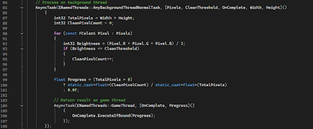
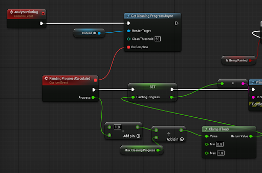
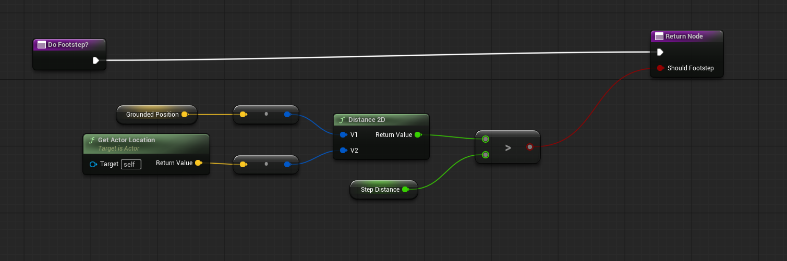
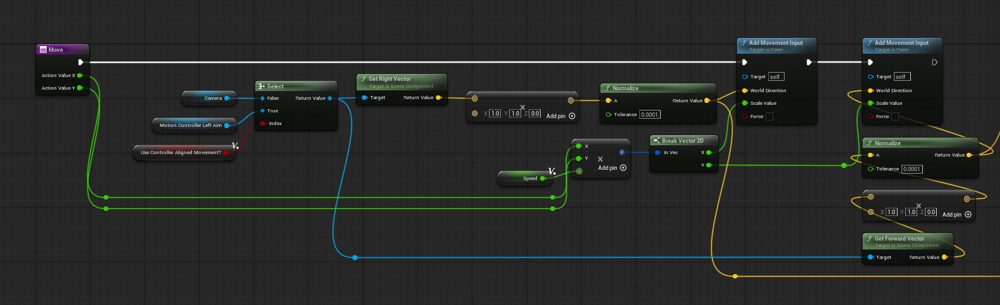
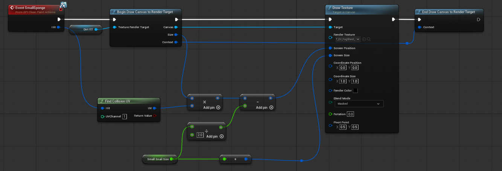
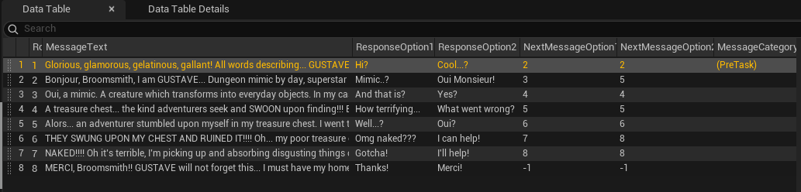
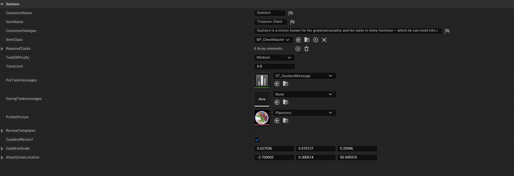
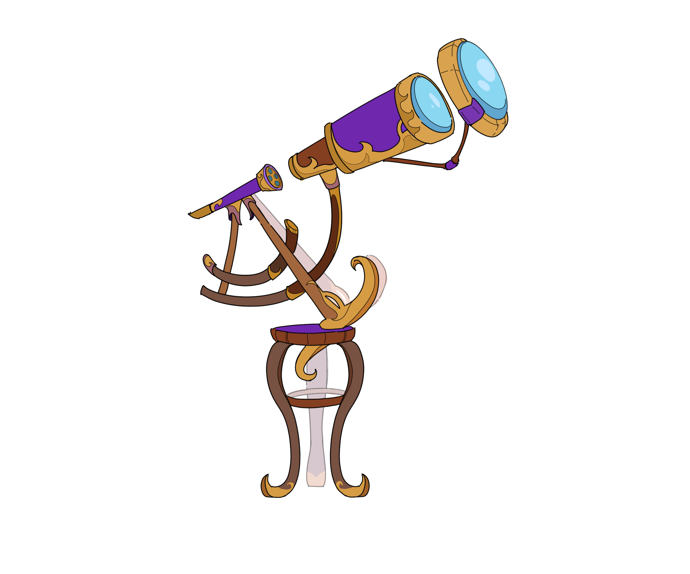
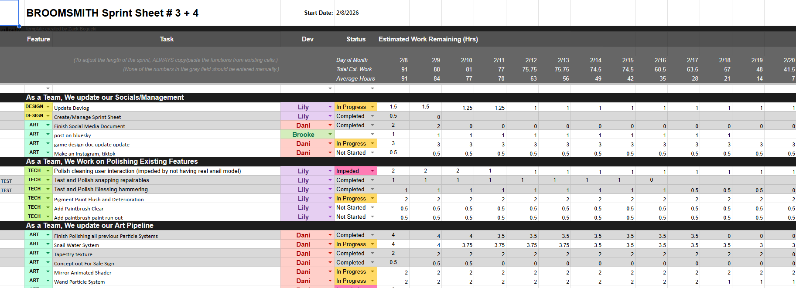

Broomsmith is a VR spellcasting and item repair experience set in a magical workshop. Players harness the powers of magical creatures to clean, paint, and restore a variety of magical items to boost their WELP ratings.
The Problem
Broomsmith’s customer rating system is reliant on the player’s cleaning and painting progress. Because of this, players should have access to a consistently-updating UI that displays their progress accurately. The only way to do this is by reading the texture data of render targets and returning the percentage of black versus white pixels within that render target. Unreal has a Blueprint Node specifically for reading texture data, however utilizing it causes frame hitches in VR. We needed an alternate solution that could efficiently read texture data while not being disruptive to the player experience by lagging the game.

What I Did
I wrote a C++ Blueprint Function Library (a system within Unreal) that reads pixel data from any given render target, then hands the pixel brightness analysis (the heavy counting work) to a background thread. The result is sent back to the game thread via a delegate, which keeps it Blueprint-callable and thread-safe.
🔗 View on GitHubThe Result
The frame freezing was eliminated entirely. The system returns a normalized float (0-1) which represents a clean pixel ratio, thresholded by brightness, and is used to help players track both their painting and cleaning progress without touching the frame budget!

Creating Joystick Walking & Footstep Audio
Though I utilized the Unreal VR Template pawn in Broomsmith, the pawn was missing some key features. The pawn only had teleportation instead of joystick movement. I implemented character movement and a paired footstep function that would calculate 2D Distance and play back a footstep if the distance was greater than a set threshold.


Overwriting The Original
Physics Grabbing was a much larger and more complicated system, because I ended up entirely overwriting the existing grab component. The custom grab component has additional custom dispatchers, events, and grab types that could be easily accessed and changed for any item it was attached to. It features addons such as a floating niagara system and animation on drop, lighting up and changing colors on distance-hovering/activating, and more.
Below is an embed of the full Distance Grabbing function including distance-grab lasers. Unreal does not have a distance grab function, so myself and a helper replicated the Unity distance-grabbing feature.
Having a custom grab component also meant more customization for grab types. Maybe some items could or couldn’t be grabbed at a distance, maybe some could only rotate because they were constrained. Maybe some could float on drop and some couldn’t!
How It Works In Editor
Cleaning and painting detection is very accurate, and this is because the cube traces from the sponge snails and painting tools draw onto a mesh’s render target utilizing UV Collision. This process is smooth and quick, and the size of a tool’s radius can be easily swapped out.

The render targets are set on BP Construct and link to each Repairable Item’s (The item a player is tasked with repairing by customers) dynamic instance material.
Material Setup

Designer Friendly Texting System
I created a blueprint system that simulated and facilitated choice-based text messaging between itself and the user- and for ease of designer use I made the dialogue completely editable from a data table, as seen in the example below.

Each text message would also communicate the length of its string to the listening text message blueprint which, based on a customizable string-per-second threshold, would play the “...” animation for a certain amount of time before posting a message. It felt more real this way!
Designer Friendly Profiles
Data tables were once again used for designer ease when editing inside the game. All information needed from each customer is packed into these data table entries, ensuring that customers can be easily added into the system in the future.

Designer Guides
Some Repairable Items come in pieces that will connect together later. To ensure that 3D modelers were creating items that aligned with my ideas and existing systems, I drew out items in two separate formats: one in default material colors and one in colors that indicated separate pieces.


Profile Photos
2D images for character profile photos.


Process
During this project I managed and onboarded two full-time members and six outsourced, part-time members. This included five designers spread across 2D illustration, 3D modeling, and Graphic Design, two sound designers and one assistant systems designer. The team worked within the Plastic SCM/Gluon version control system and reported task progress through google sheets in accordance Agile!

I organized weekly meetings and during critical work days/periods the team would report their progress during nightly standups. On multiple occasions I solved technical and teammate conflicts to ensure a respectful and productive student environment!
Thanks to SCAD, I had the opportunity to attend the 2026 Game Developers conference (GDC) in San Francisco and show off Broomsmith! Testers had great feedback and loved our beta.